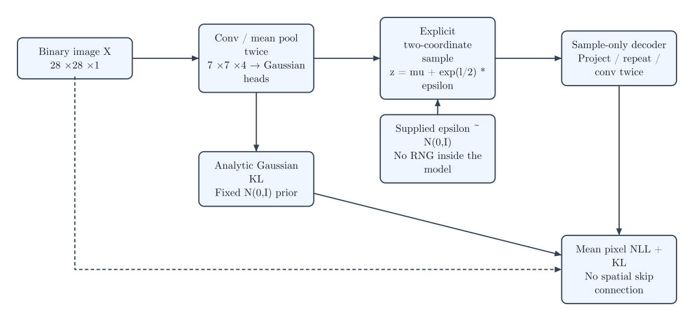
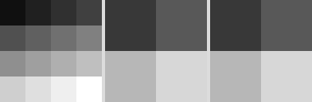
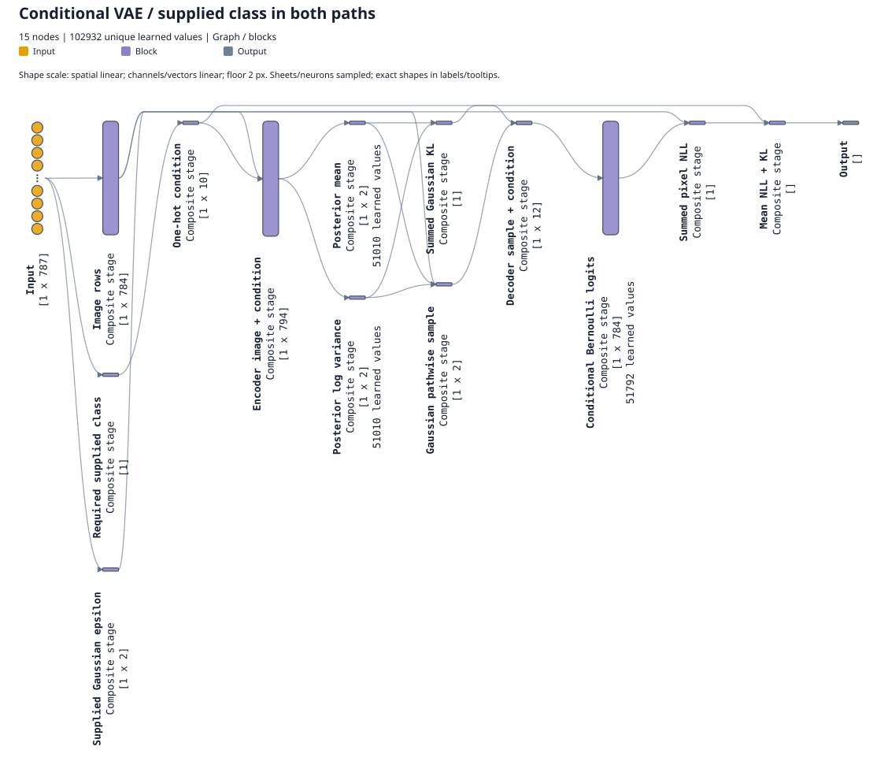
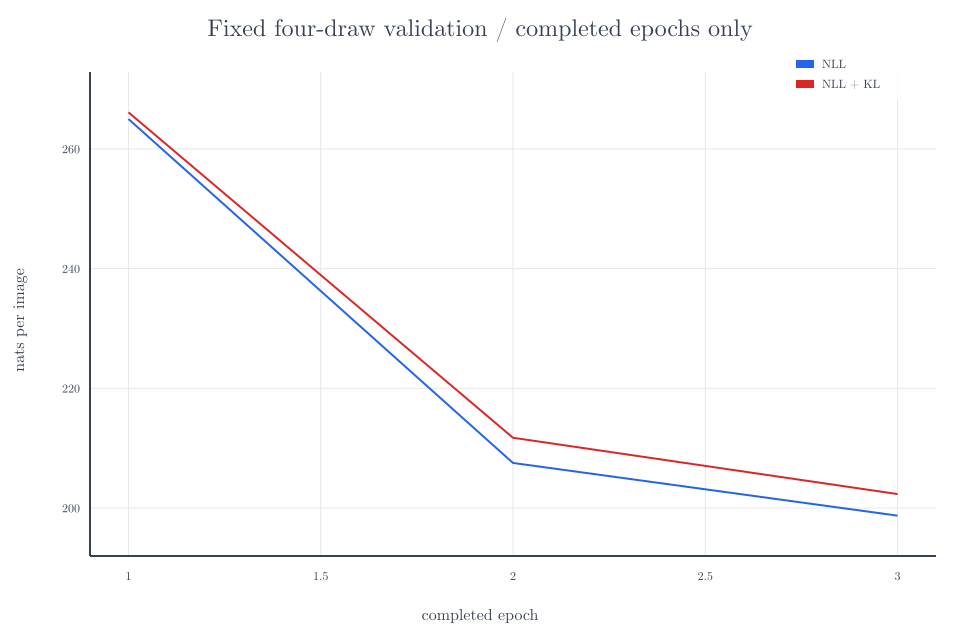
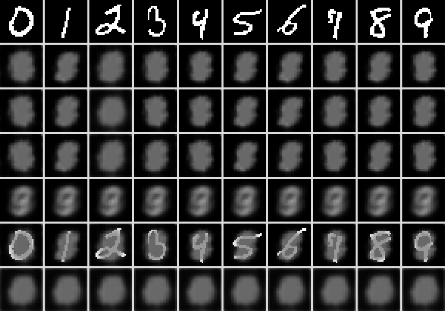
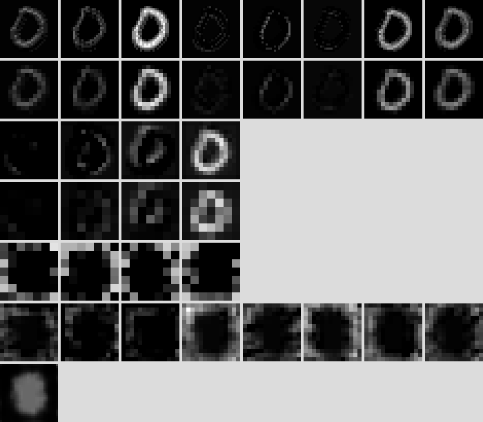
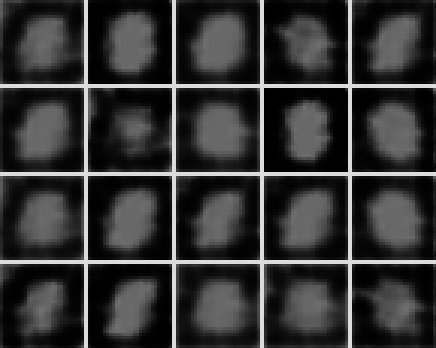
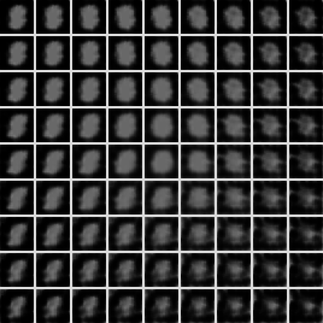

Convolutional VAE: Spatial Inference Through a Gaussian Bottleneck
Abstract
A spatial generative model must summarize an image without letting encoder feature maps bypass its stochastic bottleneck. This convolutional VAE reduces pooled28×28 grayscale features to two Gaussian coordinates, then decodes only the explicit sample through projection, nearest repetition and convolution. A hand calculation checks pooling/repetition and their adjoints before the full 2,117-parameter model trains for96 Adam updates on statically thresholded MNIST. Four fixed validation draws select epoch3. Heldout negative ELBO is209.11832 nats/image; decode(mu) MSE is0.08569 versus0.08669 for the fitting-only pixel mean. The small improvement, blurred examples, zero-code controls and unfiltered prior/grid outputs remain visible. Two latent coordinates and short training do not establish useful generation, semantic separation or compression bitrate.
A sampled code is the only bridge
The encoder uses same-padded3×3 ReLU convolutions1→8 and8→4, each followed by a nonoverlapping2×2 average pool. The resulting7×7×4 map is flattened to196 features for separate linear mean and log-variance heads, each of width2. The posterior is q(z|x)=N(mu(x),diag(exp(l(x)))); explicit epsilon~N(0,I) gives z=mu+exp(l/2)⊙epsilon. The decoder projects *only z* to196 ReLU values, reshapes7×7×4, repeats each spatial value2×2, applies a4→8 ReLU convolution, repeats again and applies an 8→1 linear-logit convolution. There are no skips, deterministic spatial codes fed to the decoder, transposed convolutions or labels. Exposed pool2 values are inspection endpoints.
[Kingma and Welling](https://arxiv.org/abs/1312.6114) derive the Gaussian pathwise estimator and evidence bound. This small pooled/repeat-decoder architecture is an educational variant, not a published benchmark configuration. The prior is fixed N(0,I), beta1, with no annealing. For one explicit posterior draw per binary image,
Jensen's inequality gives log p(x)≥E_qlog p(x−KL(q||p); this objective estimates its negative. It is not exact log likelihood or an importance-weighted bound. Sigmoid logits are probabilities, not Bernoulli pixel draws. Decode(mu) is generally not E_q[decode(z)] because the decoder is nonlinear. Summing pixels and latent coordinates is essential: averaging pixels alone would multiply the relative KL strength by784.
#include <dm/dm.hpp>
int main() {
std::filesystem::create_directories("build");
dm::graphics::Diagram d(52, 1150);
dm::graphics::DiagramStroke target;
target.arrow = true;
target.dashed = true;
d.node("x", {0, 0}, "Binary image X\n28 ×28 ×1")
.node("e", {6, 0}, "Conv / mean pool twice\n7 ×7 ×4 → Gaussian heads")
.node("z", {12, 0}, "Explicit two-coordinate sample\nz = mu + exp(l/2) * epsilon")
.node("g", {18, 0}, "Sample-only decoder\nProject / repeat / conv twice")
.node("eps", {12, -3}, "Supplied epsilon ~ N(0,I)\nNo RNG inside the model")
.node("kl", {6, -4}, "Analytic Gaussian KL\nFixed N(0,I) prior")
.node("loss", {18, -7}, "Mean pixel NLL + KL\nNo spatial skip connection")
.edge("x", "e")
.edge("e", "z")
.edge("z", "g")
.edge("eps", "z")
.edge("e", "kl")
.edge("kl", "loss")
.edge("g", "loss")
.path({{0, -.6}, {0, -7}, {16.1, -7}}, target)
.save_svg("build/conv_vae_method.svg");
}
Pooling and repetition: a hand-checkable adjoint
For a4×4 matrix filled row-wise with1,…,16, a2×2 mean pool is [[3.5,5.5],[11.5,13.5]]. Nearest repetition copies each pooled value into a2×2 block; it cannot recover the lost within-block differences. If T is repetition after mean pooling, T is an orthogonal projection onto block-constant images: T²=T and Tᵀ=T. Thus for J(X)=0.5||T(X)||², its gradient is TᵀT(X)=T(X), not four times or one quarter of it. Pooling's adjoint copies the incoming block adjoint divided by4; repetition's adjoint sums its four replicas. The executed figure shows X,T(X),dJ/dX on the same fixed scale.
A tiny4×4 VAE with one latent, channel widths2/1 and all84 learned scalars set to zero has mu=0,log variance=0 and KL=0. With any explicit finite epsilon, its zero-weight decoder gives 16 zero logits, probabilities0.5 and binary-target NLL16log2≈11.09035. No training or random sampling is hidden in either check.
#include <dm/dm.hpp>
int main() {
namespace n = dm::nn;
const auto type = n::DType::Float64;
std::vector<double> values(16);
std::iota(values.begin(), values.end(), 1.);
auto x = n::from_vector(values, {1, 4, 4, 1}).requires_grad_();
const auto pooled = n::avg_pool2d(x, 2, 2), repeated = n::upsample_nearest(pooled, 2);
const auto derivative = n::grad(.5 * n::sum(n::square(repeated)), {x})[0];
if (pooled.to_vector<double>() != std::vector<double>{3.5, 5.5, 11.5, 13.5} ||
derivative.to_vector<double>() != repeated.to_vector<double>())
return 1;
n::save_image_grid(
n::concat({x / 16, repeated / 16, derivative / 16}, 0),
"build/conv_vae_hand.png",
3,
0,
1,
4,
220. / 255,
32);
n::ParameterStore p(2011, type);
const auto binary = n::cast(n::greater_equal(x / 16, .5), type), epsilon = n::ones({1, 1}, type);
n::models::ConvolutionalVariationalAutoencoder(p, binary, epsilon, 1, 2, 1);
for (const auto& name : p.names())
p.set(name, n::zeros(p.at(name).shape(), type));
const auto o = n::models::ConvolutionalVariationalAutoencoder(p, binary, epsilon, 1, 2, 1);
if (p.count() != 84 || o.kl.item() != 0 || std::abs(o.loss.item() - 16 * std::log(2.)) > 1e-12 ||
n::min(o.probability).item() != .5 || n::max(o.probability).item() != .5)
return 1;
std::print(
"Pooled values {}; adjoint exactly equals repeated means. Zero-model loss {:.9f}, KL0, all16 "
"probabilities0.5.\n",
pooled.values_str(),
o.loss.item());
}Pooled values [[[[3.5], [5.5]], [[11.5], [13.5]]]]; adjoint exactly equals repeated means. Zero-model loss 11.090354889, KL0, all16 probabilities0.5.

For stride-one same-padded cross-correlation, each shared kernel derivative sums all uses:
ReLU multiplies by its positive-preactivation mask; its derivative at zero is zero here. The Bernoulli-logit derivative is(sigmoid(a)−x)/B because pixels are summed. At the Gaussian sample, reconstruction contributes dL/dmu=dL/dz and dL/dl=0.5(dL/dz)⊙sigma⊙epsilon; KL adds mu/B and0.5(exp(l)−1)/B. The optional independent oracle checks both initial and selected-state kernel, dense-head, projection and bias derivatives with all these reductions.
Executed architecture and unique parameter census
The seven learned layers have14 tensors and2,117 scalars: encoder1 80; encoder2 292; mean394; log variance394; decoder projection588; decoder1 296; decoder2 73. ReLU convolutions use [He initialization](https://arxiv.org/abs/1502.01852); dense heads, the *ReLU dense projection* and output convolution use ordinary Glorot uniform. All biases are zero. In particular, changing the projection initializer would change the original run. The six decoder tensors alone hold957 scalars, independent of the encoder's values.
For plotting only, a786-entry shape probe packs784 pixels and two epsilon slots. Actual model calls take NHWC image and epsilon separately. Named boundaries preserve both Gaussian heads, the supplied-noise branch, KL and reconstruction. Decoder projection/repetition begins at z; no pool2→decoder edge is introduced. Shared linear drawing scales retain a two-pixel minimum, six sampled planes and eight sampled neurons. Repeated appearances of encoder dependencies beneath the heads do not add learned scalars to the unique census.
#include <dm/dm.hpp>
int main() {
namespace n = dm::nn;
n::ParameterStore p(2011);
n::Module model(
[&](const n::Tensor& packed) {
auto image = n::reshape(n::slice_axis(packed, 1, 0, 784), {1, 28, 28, 1}),
epsilon = n::slice_axis(packed, 1, 784, 786);
n::model_stage("Image NHWC", packed, image);
n::model_stage("Supplied Gaussian epsilon", packed, epsilon);
const auto o = n::models::ConvolutionalVariationalAutoencoder(p, image, epsilon);
n::model_stage("Conv3 same 1 to8 / ReLU", image, o.conv1);
n::model_stage("Average pool2", o.conv1, o.pool1);
n::model_stage("Conv3 same 8 to4 / ReLU", o.pool1, o.conv2);
n::model_stage("Average pool2 / inspection only", o.conv2, o.pool2);
n::model_stage("Gaussian mean /196 to2", o.pool2, o.mu);
n::model_stage("Gaussian log variance /196 to2", o.pool2, o.log_variance);
n::model_stage(
"Pathwise Gaussian sample", std::vector<n::Tensor>{o.mu, o.log_variance, epsilon}, o.z);
n::model_stage("Sample-only dense projection / reshape", o.z, o.decoder_base);
n::model_stage("Repeat2 / conv4 to8 / ReLU", o.decoder_base, o.decoder1);
n::model_stage("Repeat2 / conv8 to1 / logits", o.decoder1, o.spatial_logits);
n::model_stage(
"Summed pixel NLL",
std::vector<n::Tensor>{image, o.spatial_logits},
o.reconstruction_nll);
n::model_stage("Summed Gaussian KL", std::vector<n::Tensor>{o.mu, o.log_variance}, o.kl);
n::model_stage("Mean NLL + KL", std::vector<n::Tensor>{o.reconstruction_nll, o.kl}, o.loss);
return o.loss;
},
"Convolutional Gaussian VAE / sample-only bridge");
n::ModelPlotOptions options;
options.style = n::ModelPlotStyle::Graph;
options.detail = n::ModelPlotDetail::Blocks;
options.max_neurons = 8;
options.sizing.spatial_scale = n::ModelPlotScale::Linear;
options.sizing.channel_scale = n::ModelPlotScale::Linear;
options.sizing.minimum_extent = 2;
options.sizing.max_planes = 6;
const auto figure = model.plot(n::zeros({1, 786}), options);
if (p.count() != 2117 || p.size() != 14 || figure.parameter_count() != 2117)
return 1;
figure.save_svg("build/conv_vae_architecture.svg");
std::print("14 leaves /{} unique scalars; no spatial decoder bypass.\n", p.count());
}14 leaves /2117 unique scalars; no spatial decoder bypass.

Original statically thresholded MNIST
Native preparation acquires checked original MNIST and supplies balanced1,000 fitting, 200 validation and200 official test records. LoadSaliency validates byte/metadata geometry, unique images, disjoint source IDs, digit range and100/20/20 observations per digit. Fitting and validation IDs refer to original0–59,999; official test IDs are offset to60,000–69,999. Manifest provenance retains the independent seeded row selection. Normalized Float32 pixels are thresholded at0.5, equivalent to original uint8≥128. Both original and binary images are saved. This is fixed thresholding, not the official binarized-MNIST benchmark or random per-epoch binarization. Digits label the gallery only; they never enter this VAE or select it.
#include <dm/dm.hpp>
int main() {
namespace n = dm::nn;
std::filesystem::create_directories("build/conv_vae");
const std::filesystem::path cache = dm::datasets::data_home();
dm::datasets::prepare_example_data("mnist-assets", cache.string());
const auto pools = n::models::LoadSaliency(cache / "saliency");
n::NamedTensors saved;
for (int k = 0; k < 3; ++k) {
const std::string split = k == 0 ? "fit" : k == 1 ? "validation" : "test";
saved.emplace_back(split + "_original_images", pools[k].images);
saved.emplace_back(
split + "_images", n::cast(n::greater_equal(pools[k].images, .5), n::DType::Float32));
saved.emplace_back(split + "_source_ids", pools[k].source);
}
saved.emplace_back("test_labels", pools[2].labels);
n::save_npz("build/conv_vae/data.npz", saved);
std::filesystem::copy_file(
cache / "saliency/manifest.json",
"build/conv_vae/data_manifest.json",
std::filesystem::copy_options::overwrite_existing);
std::print(
"| split | binary grayscale images | each digit "
"|\n|---|---:|---:|\n|fit|1000|100|\n|validation|200|20|\n|official test|200|20|\n");
}| split | binary grayscale images | each digit |
|---|---|---|
| fit | 1000 | 100 |
| validation | 200 | 20 |
| official test | 200 | 20 |
Ninety-six visible Adam updates and fixed four-draw validation
Seed2011 initializes the seven learned layers in their stated order. Adam uses learning rate0.003, moments0.9/0.999 and epsilon1e-8. BatchOrder(1000,32,2017) visits each fitting row once per epoch:31 full batches and a final batch of8,32 updates/epoch,96 over three. One fresh Gaussian draw per fitting record uses seeds2028/2029/2030. Four fixed draws use fit2063, validation2039 and test2053. MT19937/Box–Muller Float64 draws and their Float32 casts are archived; the forward samples from neither a global nor a hidden RNG.
Each batch explicitly constructs its forward, requests all14 parameter gradients and calls the optimizer. Initial/first-gradient/first-update/all-epoch/selected arrays are saved. Only completed epochs1–3 are candidates. Fixed four-draw validation NLL averages per-image summed Bernoulli terms over draws and images; analytic KL is counted once per image. Float64 metric accumulation iterates draw then image over Float32 per-row values, matching the original. Validation NLL+KL selects all14 leaves together; epoch-zero test score is a control only. An independent selected-state gradient review on two test images is saved *after* selection, without updating anything; it is a diagnostic, not another training/selection phase.
#include <dm/dm.hpp>
namespace nn = dm::nn;
struct NoiseBank {
nn::Tensor standard, epsilon;
};
void Require(bool ok, const std::string& why) {
if (!ok)
throw std::runtime_error(why);
}
void Near(double a, double b, double tolerance, const std::string& why) {
Require(std::abs(a - b) <= tolerance, why);
}
nn::Tensor Flatten(const nn::Tensor& t) {
return nn::reshape(t, {t.size(0), 784});
}
nn::Tensor Find(const nn::NamedTensors& a, const std::string& key) {
for (const auto& [k, v] : a)
if (k == key)
return v;
throw std::runtime_error(key);
}
std::vector<float> Bytes(const nn::Tensor& t) {
return t.contiguous().to_vector<float>();
}
auto Snapshot(const nn::ParameterStore& p) {
return p.flatten();
}
nn::NamedTensors Arrays(const nn::ParameterStore& p) {
nn::NamedTensors a;
for (const auto& k : p.names())
a.emplace_back(k, p.at(k).detach().clone());
return a;
}
nn::NamedTensors CheckGradients(
const nn::ParameterStore& p,
const std::vector<nn::Tensor>& gs,
const std::string&,
const std::string&) {
nn::NamedTensors a;
Require(gs.size() == p.size(), "all10 gradients");
const auto names = p.names();
for (std::size_t i = 0; i < gs.size(); ++i) {
double norm = 0;
for (double x : gs[i].to_vector<double>()) {
Require(std::isfinite(x), "finite derivative");
norm += x * x;
}
Require(norm > 0, "nonzero derivative in each tensor");
a.emplace_back(names[i], gs[i]);
}
return a;
}
NoiseBank VaeNoise(std::int64_t n, std::int64_t samples, std::uint32_t seed) {
const auto s = nn::models::GaussianNoise({n, 2}, samples, seed);
return {s, nn::cast(s, nn::DType::Float32)};
}
nn::Tensor VaeNoiseAt(const NoiseBank& bank, int k) {
return nn::select(bank.epsilon, 0, k).contiguous();
}
std::vector<nn::Tensor>
Evaluate(nn::ParameterStore& p, const nn::Tensor& images, const nn::Tensor& epsilon) {
nn::NoGradGuard guard;
const auto o = nn::models::ConvolutionalVariationalAutoencoder(p, images, epsilon);
return {o.mu, o.log_variance, o.z, o.probability, o.reconstruction_nll, o.kl, o.loss};
}
nn::Tensor Decode(nn::ParameterStore& p, const nn::Tensor& z) {
nn::NoGradGuard guard;
return nn::models::ConvolutionalVaeDecode(p, z).probability;
}
std::vector<nn::Tensor>
Stages(nn::ParameterStore& p, const nn::Tensor& images, const nn::Tensor& epsilon) {
nn::NoGradGuard guard;
const auto o = nn::models::ConvolutionalVariationalAutoencoder(p, images, epsilon);
return {o.conv1, o.pool1, o.conv2, o.pool2, o.decoder_base, o.decoder1, o.spatial_logits};
}
std::array<double, 3>
ConvolutionalVaeScore(nn::ParameterStore& p, const nn::Tensor& images, const NoiseBank& bank) {
double reconstruction = 0, kl = 0;
const auto n = images.size(0), samples = bank.epsilon.size(0);
for (int k = 0; k < samples; ++k) {
const auto o = Evaluate(p, images, VaeNoiseAt(bank, k));
const auto nll = o[4].to_vector<float>(), kls = o[5].to_vector<float>();
for (int b = 0; b < n; ++b) {
reconstruction += nll[b];
if (k == 0)
kl += kls[b];
}
}
reconstruction /= double(n * samples);
kl /= double(n);
return {reconstruction, kl, reconstruction + kl};
}
double MaxAbsDiff(const nn::Tensor& a, const nn::Tensor& b, int n) {
const auto x = Bytes(a), y = Bytes(b);
double d = 0;
for (int i = 0; i < n; ++i)
d = std::max(d, std::abs(double(x[i]) - y[i]));
return d;
}
double Mse(const nn::Tensor& a, const nn::Tensor& b) {
return nn::mean(
nn::square(
nn::cast(Flatten(a), nn::DType::Float64) -
nn::cast(Flatten(b), nn::DType::Float64)))
.item();
}
struct Pool {
nn::Tensor images, source;
};
int main() {
const std::filesystem::path root = "build/conv_vae";
const int epochs = 3;
const auto data = nn::load_npz((root / "data.npz").string());
std::vector<Pool> pools;
for (const std::string split : {"fit", "validation", "test"})
pools.push_back({Find(data, split + "_images"), Find(data, split + "_source_ids")});
auto val_noise = VaeNoise(200, 4, 2039), test_noise = VaeNoise(200, 4, 2053),
fit_noise = VaeNoise(1000, 4, 2063);
nn::save_npz(
(root / "fixed_noise.npz").string(),
{{"validation_standard", val_noise.standard},
{"validation_epsilon", val_noise.epsilon},
{"test_standard", test_noise.standard},
{"test_epsilon", test_noise.epsilon},
{"fit_standard", fit_noise.standard},
{"fit_epsilon", fit_noise.epsilon}});
nn::ParameterStore model(2011);
{
nn::NoGradGuard guard;
nn::models::ConvolutionalVariationalAutoencoder(
model, nn::zeros({1, 28, 28, 1}), nn::zeros({1, 2}));
}
nn::OptimizerConfig config;
config.kind = nn::OptimizerKind::Adam;
nn::Optimizer optimizer(model, .003, config);
Require(model.size() == 14 && model.count() == 2117, "twohead diagonalGaussian parameter census");
nn::save_npz((root / "initial_arrays.npz").string(), Arrays(model));
auto initial = ConvolutionalVaeScore(model, pools[2].images, test_noise);
nn::BatchOrder order(1000, 32, 2017);
std::ofstream history(root / "history.tsv"), batches(root / "batches.tsv");
history.precision(17);
history << "epoch\tfit_preupdate_negative_elbo\tvalidation_reconstruction_nll\tvalidation_"
"kl\tvalidation_"
"negative_elbo\n";
batches << "epoch\tstep\trow\tsource_id\n";
const auto fit_source = pools[0].source.to_vector<int>();
const auto best_path = (root / "best.npz").string();
double best = std::numeric_limits<double>::infinity();
int selected = 0, step = 0;
const auto started = std::chrono::steady_clock::now();
for (int epoch = 1; epoch <= epochs; ++epoch) {
auto noise = VaeNoise(1000, 1, 2027 + epoch);
nn::save_npz(
(root / ("train_noise_epoch" + std::to_string(epoch) + ".npz")).string(),
{{"standard", noise.standard}, {"epsilon", noise.epsilon}});
auto epsilon = VaeNoiseAt(noise, 0);
order.begin_epoch();
double sum = 0;
int seen = 0;
for (;;) {
auto rows = order.next();
if (rows.empty())
break;
auto input = nn::take_rows(pools[0].images, rows), e = nn::take_rows(epsilon, rows);
if (step == 0) {
auto g = CheckGradients(
model,
nn::grad(
nn::models::ConvolutionalVariationalAutoencoder(model, input, e).loss,
model.parameters()),
"all posterior/decoder negativeELBO derivatives finite",
"ALL14posterior/decoder tensors receive gradients");
nn::save_npz((root / "first_gradients.npz").string(), g);
nn::save_npz((root / "first_batch.npz").string(), {{"images", input}, {"epsilon", e}});
}
const auto out = nn::models::ConvolutionalVariationalAutoencoder(model, input, e);
sum += double(rows.size()) * out.loss.item<float>();
const auto gradients = nn::grad(out.loss, model.parameters());
optimizer.step(gradients);
seen += int(rows.size());
for (auto row : rows)
batches << epoch << '\t' << step << '\t' << row << '\t' << fit_source[row] << '\n';
if (step == 0)
nn::save_npz((root / "first_update_arrays.npz").string(), Arrays(model));
++step;
}
Require(seen == 1000, "allfittingrecords once per epoch");
auto score = ConvolutionalVaeScore(model, pools[1].images, val_noise);
history << epoch << '\t' << sum / seen << '\t' << score[0] << '\t' << score[1] << '\t'
<< score[2] << '\n';
nn::save_npz(
(root / ("epoch" + std::to_string(epoch) + "_arrays.npz")).string(), Arrays(model));
if (score[2] < best) {
best = score[2];
selected = epoch;
model.save(best_path); // fixed FOUR-sample validation negative ELBO selects epoch
}
std::cout << "VAE epoch" << epoch << ":validation NLL=" << score[0] << ",KL=" << score[1]
<< ",negativeELBO=" << score[2] << std::endl;
}
const double seconds =
std::chrono::duration<double>(std::chrono::steady_clock::now() - started).count();
nn::ParameterStore deployed(2011);
{
nn::NoGradGuard guard;
nn::models::ConvolutionalVariationalAutoencoder(
deployed, nn::zeros({1, 28, 28, 1}), nn::zeros({1, 2}));
}
deployed.load(best_path);
const auto before = Snapshot(deployed);
Near(
ConvolutionalVaeScore(deployed, pools[1].images, val_noise)[2],
best,
1e-8,
"fresh selected MC validation objective");
nn::NamedTensors output;
std::vector<NoiseBank> banks{fit_noise, val_noise, test_noise};
for (int split = 0; split < 3; ++split) {
const std::string name = split == 0 ? "fit" : split == 1 ? "validation" : "test";
const std::int64_t n = pools[split].images.size(0);
auto mean = Evaluate(deployed, pools[split].images, nn::zeros({n, 2}));
Require(Bytes(mean[2]) == Bytes(mean[0]), "epsilon0 means z=mu EXACT");
std::vector<nn::Tensor> sample_z, prediction, nll;
for (int k = 0; k < 4; ++k) {
auto draw = Evaluate(deployed, pools[split].images, VaeNoiseAt(banks[split], k));
Require(
Bytes(draw[0]) == Bytes(mean[0]) && Bytes(draw[1]) == Bytes(mean[1]),
"epsilon changes samples not posterior parameters");
sample_z.push_back(draw[2]);
prediction.push_back(draw[3]);
nll.push_back(draw[4]);
}
output.emplace_back(name + "_mu", mean[0]);
output.emplace_back(name + "_log_variance", mean[1]);
output.emplace_back(name + "_mean_reconstruction", mean[3]);
output.emplace_back(name + "_kl", mean[5]);
output.emplace_back(name + "_sample_z", nn::stack(sample_z, 0));
output.emplace_back(name + "_sample_prediction", nn::stack(prediction, 0));
output.emplace_back(name + "_sample_nll", nn::stack(nll, 0));
}
const std::vector<std::int64_t> eight{0, 1, 2, 3, 4, 5, 6, 7};
auto probe_images = nn::take_rows(pools[2].images, eight),
probe_epsilon = nn::take_rows(VaeNoiseAt(test_noise, 0), eight);
auto stages = Stages(deployed, probe_images, probe_epsilon);
const std::vector<nn::Shape> shapes{
{8, 28, 28, 8},
{8, 14, 14, 8},
{8, 14, 14, 4},
{8, 7, 7, 4},
{8, 7, 7, 4},
{8, 14, 14, 8},
{8, 28, 28, 1}};
nn::NamedTensors stage_arrays{{"images", probe_images}, {"epsilon", probe_epsilon}};
for (std::size_t i = 0; i < stages.size(); ++i) {
Require(
stages[i].shape() == shapes[i],
"all seven actual convolution/pool/repeat decoder stage shapes");
stage_arrays.emplace_back("stage" + std::to_string(i), stages[i]);
}
nn::save_npz((root / "stages.npz").string(), stage_arrays);
nn::ParameterStore gradient_probe(2011);
{
nn::NoGradGuard guard;
nn::models::ConvolutionalVariationalAutoencoder(
gradient_probe, nn::zeros({1, 28, 28, 1}), nn::zeros({1, 2}));
}
gradient_probe.load(best_path); // independent selected-gradient review restore
auto gradient_images = nn::take_rows(pools[2].images, {0, 1}),
gradient_epsilon = nn::take_rows(VaeNoiseAt(test_noise, 0), {0, 1});
auto selected_gradient = nn::grad(
nn::models::ConvolutionalVariationalAutoencoder(
gradient_probe, gradient_images, gradient_epsilon)
.loss,
gradient_probe.parameters());
nn::NamedTensors gradient_arrays;
for (std::size_t i = 0; i < selected_gradient.size(); ++i)
gradient_arrays.emplace_back(gradient_probe.names()[i], selected_gradient[i]);
nn::save_npz((root / "selected_gradients.npz").string(), gradient_arrays);
nn::save_npz(
(root / "selected_gradient_batch.npz").string(),
{{"images", gradient_images}, {"epsilon", gradient_epsilon}});
auto test = Evaluate(deployed, pools[2].images, VaeNoiseAt(test_noise, 0)),
repeat = Evaluate(deployed, pools[2].images, VaeNoiseAt(test_noise, 0));
Require(
Bytes(test[2]) == Bytes(repeat[2]) && Bytes(test[3]) == Bytes(repeat[3]) &&
Bytes(Decode(deployed, test[2])) == Bytes(test[3]),
"fixed epsilon repeatability and target-free exact sampled decode");
auto other = Evaluate(deployed, pools[2].images, VaeNoiseAt(test_noise, 1));
Require(
Bytes(test[2]) != Bytes(other[2]) && Bytes(test[3]) != Bytes(other[3]),
"second epsilon changes latent samples AND decoder probabilities");
auto single = Evaluate(
deployed, nn::take_rows(pools[2].images, {0}), nn::take_rows(VaeNoiseAt(test_noise, 0), {0}));
const double parity = MaxAbsDiff(single[3], test[3], 784);
Require(parity < 2e-6, "posterior single/batch parity");
auto zero_latent = Decode(deployed, nn::zeros({200, 2}));
output.emplace_back("zero_latent_prediction", zero_latent);
auto prior_noise = VaeNoise(20, 1, 2069);
auto prior_z = VaeNoiseAt(prior_noise, 0), prior = Decode(deployed, prior_z);
std::vector<float> gz(162);
for (int row = 0; row < 9; ++row)
for (int col = 0; col < 9; ++col) {
gz[(row * 9 + col) * 2] = -2.f + .5f * col;
gz[(row * 9 + col) * 2 + 1] = 2.f - .5f * row;
}
auto grid_z = nn::from_vector(gz, {81, 2});
auto grid = Decode(deployed, grid_z);
nn::save_npz(
(root / "prior.npz").string(),
{{"standard", prior_noise.standard},
{"z", prior_z},
{"probability", prior},
{"grid_z", grid_z},
{"grid_probability", grid}});
Require(
before == Snapshot(deployed),
"posterior evaluation/prior generation leaves ALL14parameters immutable");
nn::save_npz((root / "outputs.npz").string(), output);
nn::save_npz((root / "model_arrays.npz").string(), Arrays(deployed));
auto score = ConvolutionalVaeScore(deployed, pools[2].images, test_noise);
const auto mean_rec = Find(output, "test_mean_reconstruction");
const double mean_mse = Mse(mean_rec, pools[2].images);
const auto fit = nn::cast(Flatten(pools[0].images), nn::DType::Float64),
mean = nn::tile(nn::cast(nn::mean(fit, {0}, true), nn::DType::Float32), {200, 1});
std::print(
"| quantity | heldout value |\n|---|---:|\n| selected epoch |{}|\n| NLL nats/image "
"|{:.9f}|\n| KL nats/image |{:.9f}|\n| negative ELBO |{:.9f}|\n| decode(mu) pixel MSE "
"|{:.9f}|\n| fitting pixel mean MSE |{:.9f}|\n",
selected,
score[0],
score[1],
score[2],
mean_mse,
Mse(mean, pools[2].images));
Require(step == 96 && optimizer.iterations() == 96, "original96 updates");
Require(bool(history) && bool(batches), "complete batch/history evidence");
}VAE epoch1:validation NLL=264.995,KL=1.11553,negativeELBO=266.11 VAE epoch2:validation NLL=207.528,KL=4.20927,negativeELBO=211.737 VAE epoch3:validation NLL=198.723,KL=3.60352,negativeELBO=202.326
| quantity | heldout value |
|---|---|
| selected epoch | 3 |
| NLL nats/image | 205.425587282 |
| KL nats/image | 3.692729261 |
| negative ELBO | 209.118316543 |
| decode(mu) pixel MSE | 0.085688548 |
| fitting pixel mean MSE | 0.086689513 |
Selected metrics and weak reconstruction controls
Epoch3 test NLL is205.425587 nats/image, KL3.692729 and negative ELBO209.118317. Decode(mu) pixel MSE is0.085688548 versus0.086689513 for the fitting-only binary pixel mean: a small improvement in this short single-seed run. No test value or digit label selected the epoch. The original heldout score before training was535.095112, but epoch zero was ineligible.
The gallery takes the first heldout record per digit0–9, without quality filtering. Rows are binary input, decode(mu), posterior draw0 probabilities, draw1 probabilities, fitting pixel mean, absolute decode(mu) error and zero-code decoder probabilities. All use fixed[0,1]gray, nearest scale3 and gap4; errors are not amplified. Zero-code outputs include learned decoder biases; they are a target-free control, not the prior predictive mean. Four posterior draws per split are stored individually rather than mislabeled as a predictive mean.
#include <dm/dm.hpp>
int main() {
std::ifstream f("build/conv_vae/history.tsv");
std::string line;
std::getline(f, line);
std::vector<double> epochs, nll, total;
while (std::getline(f, line)) {
std::istringstream r(line);
double e, train, a, b, c;
r >> e >> train >> a >> b >> c;
epochs.push_back(e);
nll.push_back(a);
total.push_back(c);
}
auto p = dm::graphics::RPlot::create();
p.lines(epochs, nll, "NLL", {37, 99, 235}, 2)
.lines(epochs, total, "NLL + KL", {220, 38, 38}, 2)
.title("Fixed four-draw validation / completed epochs only")
.x_label("completed epoch")
.y_label("nats per image")
.save_svg("build/conv_vae_learning.svg");
}
#include <dm/dm.hpp>
int main() {
namespace n = dm::nn;
auto load = [](const std::string& file) {
std::map<std::string, n::Tensor> a;
for (const auto& [k, v] : n::load_npz("build/conv_vae/" + file + ".npz"))
a.emplace(k, v);
return a;
};
auto d = load("data"), o = load("outputs");
const auto labels = d.at("test_labels").to_vector<int>();
std::vector<std::int64_t> rows;
for (int c = 0; c < 10; ++c) {
const auto found = std::find(labels.begin(), labels.end(), c);
if (found == labels.end())
return 1;
rows.push_back(found - labels.begin());
}
const auto binary = n::reshape(d.at("test_images"), {200, 784}),
fit = n::reshape(d.at("fit_images"), {1000, 784}),
mean = o.at("test_mean_reconstruction"), draw = o.at("test_sample_prediction");
const auto baseline = n::tile(
n::cast(n::mean(n::cast(fit, n::DType::Float64), {0}, true), n::DType::Float32), {200, 1});
std::vector<n::Tensor> panels;
for (const auto& t :
{binary,
mean,
n::select(draw, 0, 0),
n::select(draw, 0, 1),
baseline,
n::abs(mean - binary),
o.at("zero_latent_prediction")})
panels.push_back(n::take_rows(t, rows));
n::save_image_grid(
n::reshape(n::concat(panels, 0), {70, 28, 28, 1}),
"build/conv_vae_reconstructions.png",
10,
0,
1,
4,
220. / 255,
3);
}
Inspecting the seven spatial stages
The stage archive records the first eight heldout images with fixed draw0 noise. The figure shows the *first* of those records. Rows are conv1,pool1,conv2,pool2,decoder base,decoder1 and final sigmoid probabilities. The first six rows share one display maximum per stage over all eight records/channels; this is a feature-inspection scale, not a pixel probability scale. Each channel is nearest-repeated to28×28 for comparison. Missing channel slots are gray. The final row uses sigmoid of spatial logits on fixed[0,1], with no feature normalization. Pool2 and decoder-base rows differ: one comes from the image, the other from sampled z only.
#include <dm/dm.hpp>
int main() {
namespace n = dm::nn;
std::map<std::string, n::Tensor> a;
for (const auto& [k, v] : n::load_npz("build/conv_vae/stages.npz"))
a.emplace(k, v);
std::vector<n::Tensor> tiles;
for (int stage = 0; stage < 7; ++stage) {
auto t = a.at("stage" + std::to_string(stage));
if (stage == 6)
t = n::sigmoid(t);
else {
const double maximum = n::max(t).item();
if (maximum > 0)
t = t / maximum;
}
for (int c = 0; c < 8; ++c) {
if (c >= t.size(3)) {
tiles.push_back(n::full({1, 28, 28, 1}, 220. / 255));
continue;
}
auto channel = n::slice_axis(n::take_rows(t, {0}), 3, c, c + 1);
if (t.size(1) != 28)
channel = n::upsample_nearest(channel, 28 / t.size(1));
tiles.push_back(channel);
}
}
n::save_image_grid(n::concat(tiles, 0), "build/conv_vae_stages.png", 8, 0, 1, 4, 220. / 255, 3);
}
Unfiltered prior decoding and a fixed latent grid
Twenty explicit standard-normal prior codes use seed2069 and no image, label or posterior input. The complete prior gallery shows sigmoid probabilities, not sampled Bernoulli pixels. The81-point grid uses z_x from−2 to2 left to right and z_y from2 to−2 top to bottom, step0.5. It is a decoder inspection, not a data embedding or proof of semantic axes. Every output keeps the same[0,1]gray range; none is selected or normalized by visual quality.
#include <dm/dm.hpp>
int main() {
namespace n = dm::nn;
for (const auto& [key, v] : n::load_npz("build/conv_vae/prior.npz"))
if (key == "probability")
n::save_image_grid(
n::reshape(v, {v.size(0), 28, 28, 1}),
"build/conv_vae_prior.png",
5,
0,
1,
4,
220. / 255,
3);
}
#include <dm/dm.hpp>
int main() {
namespace n = dm::nn;
for (const auto& [key, v] : n::load_npz("build/conv_vae/prior.npz"))
if (key == "grid_probability")
n::save_image_grid(
n::reshape(v, {v.size(0), 28, 28, 1}),
"build/conv_vae_latent_grid.png",
9,
0,
1,
4,
220. / 255,
2);
}
Reuse and evidence
The core models::ConvolutionalVariationalAutoencoder and ConvolutionalVaeDecode expose owning Gaussian/spatial endpoints, including decoder-only intermediate values. Their input checks cover dtype/range, NHWC shape, multiples-of-four geometry, explicit noise and matching batches before leaf creation. Python/R call the same C++ model mathematics; the report owns the complete editable training loop and all96 updates, with no legacy helper dependency.
All19 original archives, the exact batch TSV and complete training/validation history are compared by dtype, shape and value bytes. Artifacts retain all seven stages, the initial and selected-state gradients, first update, every epoch, selected weights, fixed/training noise, all posterior/prior/grid predictions and zero-code controls. Independent NumPy checks both sets of2,117 chain-rule derivatives, the exact Float32 first Adam step, spatial adjoints, Gaussian banks and complete forward outputs. Fixed-noise repeats, changed-noise samples, zero-epsilon means, target-free sampled decoding, single/batch parity and immutable inference are executed checks. A finite three-epoch trajectory supports those results, not convergence, semantic disentanglement, exact likelihood superiority or quantized compression claims.